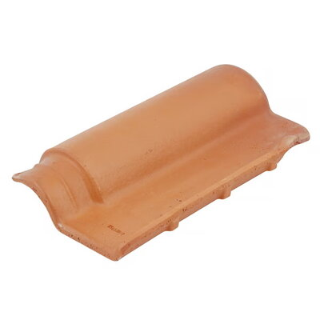

Telha cerâmica portuguesa 40,40x24,10cm
Preço: R$1,99/UN
Descrição detalhada
| Produto | Telha cerâmica |
|---|---|
| Tipo | Cerâmica |
| Cor | Resinada vermelha |
| Comprimento | 40 cm |
| Largura | 24,10 cm |
| Quantidade de telhas por m² | 16 telhas |
| Inclinação | 30° |
| Custo do madeiramento | Alto |